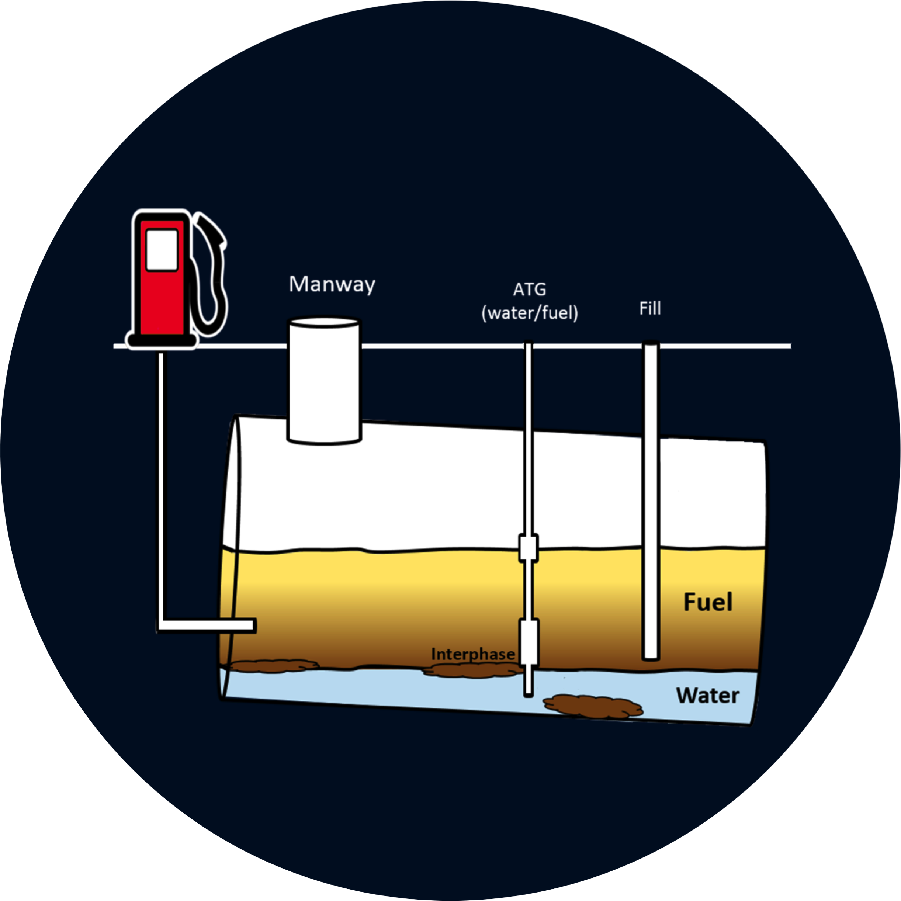

Engineered Microbes to Sense and Destroy Biofilms
MAY 2018 - NOV 2018
Group Members
|
Mentors
|
AbstractWith growing environmental concerns, industries are increasingly relying on the use of biofuels. Biodiesel storage tanks are susceptible to water infiltration that often results in the formation of biofilms containing bacteria and fungi. Biofilms may clog pipes, degrade fuel, or corrode storage tanks. We set out to engineer a “seek, aim, and destroy” system for the remediation of microbial biofilm. Pseudomonas aeruginosa, commonly found in fuel biofilms, releases the quorum sensing molecule N-butanoyl-L-homoserine lactone (C4-HSL). Our engineered E. coli cells express CheZ protein in response to a concentration gradient of C4-HSL to activate the flagella motors and propel the cells towards the biofilm. In addition, the engineered E. coli expresses chitinase on its surface and secretes cinnamaldehyde. Chitinase breaks down chitin in the fungal cell walls, increasing the ability of cinnamaldehyde to destroy the fungi. Cinnamaldehyde also eliminates bacteria, thus remediating the biofilm. |
|
|  |
The ProblemThere are three clear distinct layers that form in fuel containment systems: A water layer, the sludge layer, and the actual fuel layer. The formation of these layers usually takes a few weeks, but over time, water seeps into these underground tanks due to imperfections with storage techniques. With this water, microorganism contamination also comes into the mix. Now, a perfect environment for these microorganisms is present, because the water provides the perfect living conditions, and the biofuel contains high amounts of FAMEs (Fatty Acid Methyl Esters) for the microorganisms to feed on. Due to the density difference between fuel and water, the fuel sits on top, the water sits on the bottom, and the microorganisms sit in the middle forming the sludge, which is more commonly known as a biofilm. |
Our ApproachWe split our project up into three parts: Detect, Deliver, and Destroy Detect C4-HSL, using the RhlR receptor gene. Deliver the plasmid to the biofilm using E. coli's natural chemotactic ability by expressing the protein CheZ Destroy the bacterial and fungal biofilm by deploying two chitinase constructs to destroy chitin in the fungal cell walls, then utilizing cinnamaldehyde to kill the bacteria and fungi, which prevents biofilm formation. |